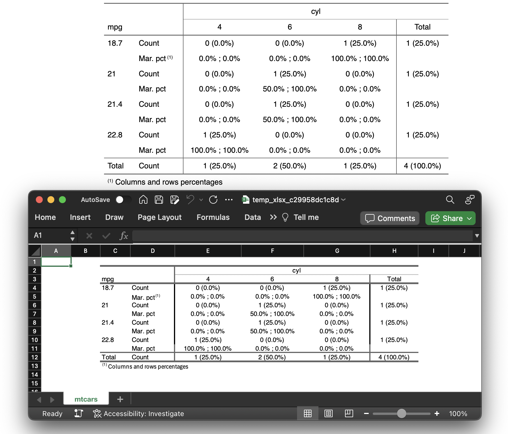

15 Extending openxlsx2
15.1 msoc - Encrypting / Decrypting workbooks
You might want to look at msoc (Garbuszus 2023) for openxml file level encryption/decryption.
library(msoc)
xlsx <- temp_xlsx()
# let us write some worksheet
wb_workbook()$add_worksheet()$add_data(x = mtcars)$save(xlsx)
# now we can encrypt it
encrypt(xlsx, xlsx, pass = "msoc")
#> [1] "/tmp/Rtmp007F60/temp_xlsx_269d60b7d583.xlsx"
# the file is encrypted, we can not read it
try(wb <- wb_load(xlsx))
#> Error : Unable to open and load file: /tmp/Rtmp007F60/temp_xlsx_269d60b7d583.xlsx
# we have to decrypt it first
decrypt(xlsx, xlsx, pass = "msoc")
#> [1] "/tmp/Rtmp007F60/temp_xlsx_269d60b7d583.xlsx"
# now we can load it again
wb_load(xlsx)$to_df() |> head()
#> mpg cyl disp hp drat wt qsec vs am gear carb
#> 2 21.0 6 160 110 3.90 2.620 16.46 0 1 4 4
#> 3 21.0 6 160 110 3.90 2.875 17.02 0 1 4 4
#> 4 22.8 4 108 93 3.85 2.320 18.61 1 1 4 1
#> 5 21.4 6 258 110 3.08 3.215 19.44 1 0 3 1
#> 6 18.7 8 360 175 3.15 3.440 17.02 0 0 3 2
#> 7 18.1 6 225 105 2.76 3.460 20.22 1 0 3 1
15.2 flexlsx - Exporting flextable to workbooks
Using flexlsx (Heidler 2024) you can extend openxlsx2 to write flextable objects (Gohel and Skintzos 2023) to spreadsheets. Various styling options are supported. A detailed description how to create flextables is given in the flextable book (a link is in the bibliography).
library(flexlsx)
wb <- wb_workbook()$add_worksheet("mtcars", grid_lines = FALSE)
# Create a flextable and an openxlsx2 workbook
ft <- flextable::as_flextable(table(mtcars[2:5, 1:2]))
ft
# add the flextable ft to the workbook, sheet "mtcars"
# offset the table to cell 'C2'
wb <- flexlsx::wb_add_flextable(wb, "mtcars", ft, dims = "C2")
if (interactive()) wb$open()
15.3 openxlsx2Extras - Extending openxlsx2
Early in development, openxlsx2Extras (Pousson 2024) allows extending various functions for user convenience or for features, that are more focused on working along openxlsx2 and therefore are not necessary a requirement for the package itself.
One example (more can be found on the project github and pkgdown pages) is the following.
library(openxlsx2)
library(openxlsx2Extras)
wb_new_workbook(
title = "Workbook created with wb_new_workbook",
sheet_names = c("First sheet", "Second sheet"),
tab_color = c(wb_color("orange"), wb_color("yellow"))
)
#> A Workbook object.
#>
#> Worksheets:
#> Sheets: First sheet, Second sheet
#> Write order: 1, 2
15.4 ovbars - Reading the vbaProject.bin
Another niche package is ovbars (Garbuszus 2024). This package allows reading the binary blob that contains macros in xlsm and potentially xlsb files. The package allows extracting the VBA code.
url <- "https://github.com/JanMarvin/openxlsx-data/raw/refs/heads/main"
fl <- file.path(url, "gh_issue_416.xlsm")
wb <- openxlsx2::wb_load(fl)
vba <- wb$vbaProject
code <- ovbars::ovbar_out(name = vba)
message(code["Sheet1"])
#> Attribute VB_Name = "Sheet1"
#> Attribute VB_Base = "0{00020820-0000-0000-C000-000000000046}"
#> Attribute VB_GlobalNameSpace = False
#> Attribute VB_Creatable = False
#> Attribute VB_PredeclaredId = True
#> Attribute VB_Exposed = True
#> Attribute VB_TemplateDerived = False
#> Attribute VB_Customizable = True
#> Private Sub Worksheet_SelectionChange(ByVal Target As Range)
#> #donothing
#> End Sub